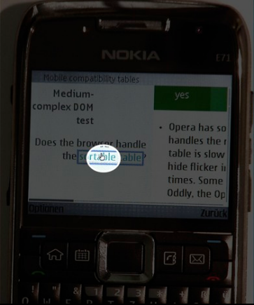
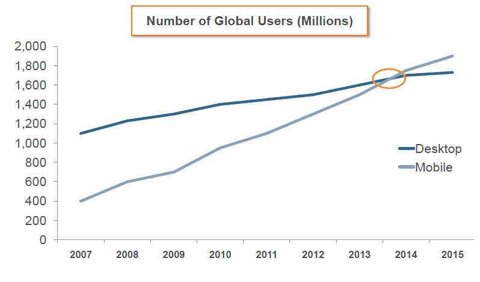

A Touch of HTML5
Boris Smus (@borismus)
June 2011
http://goo.gl/4zUDS
What we'll talk about
- Touch and Web
- Implementation tips
- Awesome demos!
- Developer tools
History of input
- Desktop: mouse and keyboard largely independent
- Mobile: it got really messy

- Mixed mode - key/mouse:
- And then eventually... touch!
Who cares?
- 500M smartphones by 2011, 1B by 2013
- Mobile search up sixfold since 2 years ago, soon > desktop

- More details in this infographic
Touch screens
- Hello iOS, Hello Android!
- Capacitive touch screens
- Touch: dominant mobile interaction
- Tons of touch-based applications available
What can you do?
Touch in HTML5
Why and How?
Do we need touch events?
- Touch events !== mouse events
- No hover state
- Multiple fingers
- Surface shapes (not widely implemented)
- Future: pressure? haptic feedback?
Touch events
-
Touch events are a web standard.
-
Core:
touchstart touchmove touchend
-
Not:
touchenter touchleave touchcancel
-
Fingers:
touches targetTouches changedTouches
Browser support
-
Compatibility sites: caniuse.com and quirksmode.org
-
MobileSafari is the best, Android Browser is behind, but catching up.
-
Android implementations: XOOM > Nexus S > Nexus One
-
Lots of bugs
Development pro-tips
Little tricks for web multi-touch implementers
Beware click delays
- Click on mobile is delayed by ~300ms
- Browser decides double tap? scroll? zoom?
- Fast buttons:
touchend fires right away
- Info and sample code in google code article
Disable zooming
-
Prevent mobile browsers from handling zoom gesture
-
Set a fixed viewport:
<meta name="viewport"
content="width=device-width, height=device-height,
initial-scale=1.0, user-scalable=no">
Also see this post regarding an iPhone viewport bug
Disable scrolling
- iOS overscroll effect can be annoying
- Override the event:
document.body.addEventListener('touchmove', function(event) {
event.preventDefault();
}, false);
Disable default longpress
- If you want a custom hold and press event
- Disable the browser behavior:
mySelector {
-webkit-touch-callout: none;
}
Don't render too often
- Touch events fire quickly and furiously
- Many fingers! This can be expensive:
canvas.addEventListener('touchmove', function(event) {
renderTouches(event.touches);
}, false);
Strategies: throttle (prioritize), debounce (deprioritize) or...
Don't render too often
- Decouple input handling and drawing:
var touches = []
canvas.addEventListener('touchmove', function(event) {
touches = event.touches;
}, false);
// Setup a 60fps timer
timer = setInterval(function() {
renderTouches(touches);
}, 15);
Eventually requestAnimationFrame (use the shim)
Aside: iOS5 Mobile Goodies
position:fixed for headers and footersoverflow:scroll for scrolling divs (but no inertia)- DateTime, range input types
- A lot more love. Read it and weep! (tears of joy)
Demos
Finger candy!
Samples
Moar demo
Apps
Your demo here!
So much more awesome stuff to be done. Go mobile web.
Developer tools
Help is on the way
Gestures
Debugging
- It's difficult on mobile
- Webkit Inspector/Chrome Devtools are awesome!
- Remote debugging (natively in RIM's Playbook).
- Also see Weinre (haven't tried it yet)
Simulating touch events
Thanks!
@borismus
{kind=link}